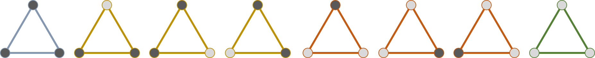

codgician
2020.03.13
G 是非空集合，且二元运算满足：
若满足交换律，则为交换群
设 x 是 a 的左逆元，y 是 a 的右逆元，有：
x = xe = x(ay) = (xa)y = y
设 (G, \cdot) 为群，H 是 G 的子集，若 (H, \cdot) 成群，则称 H 为 G 的子群，记作 H \le G；
若集合 A 上的关系 \sim 满足如下条件：
则称 \sim 是等价关系 (equivalence relation)。
a \sim b := a \equiv b \pmod 7
设 \sim 是 A 上的等价关系，\forall a \in A，[a] 表示 A 中与 a 等价的全部元素构成的集合：
[a] = \{ b \mid b \sim a \land b \in A \}
称 [a] 为 a 所在的等价类 (equivalence class)。
若 a, b \in A 且 [a] \cap [b] \neq \emptyset，则 [a] = [b]。
设 H \leq G，对于 x \in G：
\begin{aligned} xH & = \{ x \cdot h \mid h \in H \} \end{aligned}
x \sim y := x \in yH
若 xH \cap yH \neq \emptyset，则 xH = yH；
利用陪集可以对群 G 进行划分（陪集分解）：
G = \bigcup\limits_{g \in R} gH \text{（两两不相交之并）}
设 G 为有限群，H \leq G，则：
\mid G \mid = [G : H] \cdot \mid H \mid
其中 [G : H] 称为群 H 对于群 G 的指数 (index)。
一个集合的置换 (permutation) 即从该集合映射至自身的双射。
\sigma = \left(\begin{array}{c} 1 & 2 & \dots & n \\ \sigma(1) & \sigma(2) & \dots & \sigma(n) \end{array}\right)
复合运算: (f \circ g)(x) = f(g(x))
\left(\begin{array}{c} 1 & 2 & 3 & 4 & 5 & 6 \\ 4 & 5 & 1 & 3 & 6 & 2 \end{array}\right)
\begin{aligned} 1 & \rightarrow 4 \rightarrow 3 \\ 2 & \rightarrow 5 \rightarrow 6 \end{aligned}
任一置换都能被划分成若干不交的映射链？
\left(\begin{array}{c} a_1 & a_2 & \dots & a_n \\ a_2 & a_3 & \dots & a_1 \end{array}\right) \xRightarrow{\text{记作}} (a_1 \enspace a_2 \enspace \dots \enspace a_n)
\left(\begin{array}{c} 1 & 2 & 3 & 4 & 5 & 6 \\ 4 & 5 & 1 & 3 & 6 & 2 \end{array}\right) = (1 \enspace 4 \enspace 3) \cdot (2 \enspace 5 \enspace 6)
若不计轮换内外的次序，对于任意置换的不交轮换分解是唯一的吗？
(1 \enspace 2 \enspace 3 \enspace 4 \enspace 5 \enspace 6)
\begin{aligned} & (1 \enspace 2 \enspace 3 \enspace 4 \enspace 5 \enspace 6)^2 \\ & = (1 \enspace 3 \enspace 5) \cdot (2 \enspace 4 \enspace 6) \end{aligned}
\begin{aligned} & (1 \enspace 2 \enspace 3 \enspace 4 \enspace 5 \enspace 6)^3 \\ & = (1 \enspace 4) \cdot (2 \enspace 5) \cdot (3 \enspace 6) \end{aligned}
\begin{aligned} & (1 \enspace 2 \enspace 3 \enspace 4 \enspace 5 \enspace 6)^4 \\ & = (1 \enspace 5 \enspace 3) \cdot (2 \enspace 6 \enspace 4) \end{aligned}
\sigma = (a_0 \enspace a_1 \enspace \dots \enspace a_{n - 1})
i + tk \equiv i \pmod n
tk \equiv 0 \pmod n
最小非负解：k = \frac{n}{\gcd(n, t)}
\sigma = (a_0 \enspace a_1 \enspace \dots \enspace a_{n - 1})
\sigma^t 可表示为 \gcd(n, t) 个长为 \frac{n}{\gcd(n, t)} 的轮换；
a_i 所在轮换里第 j \ (0 \le j < \gcd(n, t) ) 个元素为 a_{(i + jt) \bmod n}。
n 个元的所有置换，在复合运算 \circ 下成群，称作 n 元对称群 S_n
\begin{aligned} \phi: G \times M & \longrightarrow M \\ (\sigma, x) & \longmapsto \sigma \circ x \end{aligned}
\begin{aligned} G& = \{ \text{顺时针旋转 } 0^\circ, 120^\circ, 240^\circ \} \\ M & = \{ \text{不考虑同构时的染色方案} \} \end{aligned}

群 G 作用于集合 M 上，x \in M，称 M 的子集
\text{orb}_G(x) = \{ \sigma \circ x \mid \sigma \in G \}
为 x 在 G 作用下的轨道 (orbit)，简称过 x 的轨道。
\text{orb}_G(x) = \{ \sigma \circ x \mid \sigma \in G \}
x \sim y := x \in \text{orb}_G(y)
若 \text{orb}_G(x) \cap \text{orb}_G(y) \neq \emptyset，则 \text{orb}_G(x) = \text{orb}_G(y)；
在 M 的每一条轨道上取一个元素组成 M 的一个子集 R，称为 M 的轨道的代表元集，则：
M = \bigcup\limits_{x \in R} \text{orb}_G(x)
并且此中各 \text{orb}_G(x) 互不相交。
设群 G 作用于集合 M，对 x \in M，称
\text{stab}_G(x) = \{ \sigma \circ x = x \mid \sigma \in G \}
为群 G 作用下 x 的稳定子 (stabilizer)。
\text{stab}_G(x) = \{ \sigma \circ x = x \mid \sigma \in G \} \le G
\text{stab}_G(x) = \{ \sigma \circ x = x \mid \sigma \in G \} \le G
设有限群 G 作用于集合 M ，x \in M，则：
\mid G \mid = \mid \text{stab}_G(x) \mid \cdot \mid \text{orb}_G(x) \mid
设有限群 G 作用于有限集 M 上，则轨道数：
\mid M / G \mid = \frac{1}{\mid G \mid} \sum\limits_{\sigma \in G} |\text{fix}(\sigma)|
其中 \text{fix}(\sigma) 代表 \sigma 的不动元构成的集合：
\text{fix}(\sigma) = \{ \sigma \circ x = x \mid x \in M \}
\begin{aligned} \text{stab}_G(x) & = \{ \sigma \circ x = x \mid \sigma \in G \}\\ \text{fix}(\sigma) & = \{ \sigma \circ x = x \mid x \in M \} \end{aligned}
\sum\limits_{x \in M} \mid \text{stab}_G(x) \mid = \sum\limits_{\sigma \in G} \mid \text{fix}(\sigma) \mid
\begin{aligned} \mid M / G \mid & = \sum\limits_{x \in M} \frac{1}{ \mid \text{orb}_G(x) \mid } \\ & = \sum\limits_{x \in M}\frac{ \mid \text{stab}_G(x) \mid }{ \mid G \mid } \text{（轨道-稳定子定理）} \\ & = \frac{1}{\mid G \mid}\sum\limits_{\sigma \in G} \mid \text{fix}(\sigma) \mid \end{aligned}
对正六边形的 6 个顶点，一半涂黑色一半涂白色。若经过旋转可相互得到的方案算同一种方案，求染色方案数？
M = \text{所有涂色方案， 共：} \binom{6}{3} = 20 \text{ 种}
G = \{ 60^\circ, 120^\circ, 180^\circ, 240^\circ, 300^\circ, 360^\circ \} \\ \text{（绕中心顺时针旋转）}
记 6 个顶点分别为 A_1, A_2, \dots, A_6。
\left(\begin{array}{c} A_1 & A_2 & A_3 & A_4 & A_5 & A_6 \\ A_1 & A_2 & A_3 & A_4 & A_5 & A_6 \end{array}\right)
将这一置换作用于 M 中的任意元素都不会使该元素发生变化，故不动元有 20 个。
\left(\begin{array}{c} A_1 & A_2 & A_3 & A_4 & A_5 & A_6 \\ A_6 & A_1 & A_2 & A_3 & A_4 & A_5 \end{array}\right)
若要成为不动元，则应当满足：
A_1 = A_2 = \dots = A_6
故没有不动元
\left(\begin{array}{c} A_1 & A_2 & A_3 & A_4 & A_5 & A_6 \\ A_5 & A_6 & A_1 & A_2 & A_3 & A_4 \end{array}\right)
若要成为不动元，则应当满足：
A_1 = A_3 = A_5, \ A_2 = A_4 = A_6
故不动元数量为 2
\left(\begin{array}{c} A_1 & A_2 & A_3 & A_4 & A_5 & A_6 \\ A_4 & A_5 & A_6 & A_1 & A_2 & A_3 \end{array}\right)
若要成为不动元，则应当满足：
A_1 = A_4, \ A_2 = A_5, \ A_3 = A_6
故没有不动元
轨道数：\frac{1}{6}(20 + 2 + 2) = 4
将置换表示为若干轮换乘积，若轮换内元素颜色均相同即为不动元……
记染色可选的颜色数为 m， c(\sigma) 为置换 \sigma 被分解为不交轮换乘积的个数，则：
\text{fix}(\sigma) = m^{c(\sigma)}
\mid M / G \mid = \frac{1}{\mid G \mid} \sum\limits_{\sigma \in G} m^{c(\sigma)}
长为 n 的环，m 种颜色对环上元素染色，经旋转或翻转都算作相同方案
n, m \le 10^9
\begin{aligned} G & = \{ \text{顺时针旋转} \frac{2\pi}{n}, \dots, (n - 1)\frac{2\pi}{n}, 2\pi, \\ & \text{过每一条对称轴的翻转 } \} \\ M & = \{ \text{不考虑同构的所有染色方案} \} \end{aligned}
G 作用于 M
G 中复合运算封闭吗？
若将环上的元素按顺时针编号：0, 1, \dots (n - 1)
\sum\limits_{\sigma} \mid \text{fix}(\sigma) \mid = \sum\limits_{i = 1}^{n} m^{\gcd(n, i)}
\begin{aligned} \sum\limits_{g \in G} \mid \text{fix}(\sigma) \mid & = \sum\limits_{i = 1}^{n} m^{\gcd(n, i)} \\ & = \sum\limits_{d \mid n} m^d \sum\limits_{i = 1}^{n} [ \gcd(n, i) = d ] \\ & =\sum\limits_{d \mid n} m^d \sum\limits_{i = 1}^{n} [ \gcd(\frac{n}{d}, i) = 1 ] \\ & = \sum\limits_{d \mid n} m^d \cdot \varphi(\frac{n}{d}) \end{aligned}
\begin{aligned} \mid M / G \mid & = \frac{\sum\limits_{\sigma} \mid \text{fix}(\sigma) \mid + \sum\limits_{\tau} \mid \text{fix}(\tau) \mid}{2n} \\ & = \frac{1}{2n}\sum\limits_{d \mid n} m^d \cdot \varphi(\frac{n}{d}) \\ & + \frac{1}{2n} \begin{cases} \frac{n}{2} \cdot m^{\frac{n}{2} + 1} + \frac{n}{2} \cdot m^{\frac{n}{2}} & 2 \mid n \\ n \cdot m^{\frac{n + 1}{2}} & 2 \nmid n \end{cases} \end{aligned}
现要从 4 种不同的水晶中取 n 个围成一个圈，但有 m 个限制条件：每条限制条件要求某四种水晶不能在围成的圈中连续出现。通过旋转可互相得到的方案算作一种方案，问有多少种本质不同的方案？（结果模 998244353）
n \le 10^5, m \le 256
\begin{aligned} G & = \{ \text{顺时针旋转} \frac{2\pi}{n}, \dots, (n - 1)\frac{2\pi}{n}, 2\pi \} \\ M & = \{ \text{满足限制且不计同构的染色方案} \} \end{aligned}
对于旋转 i \frac{2\pi}{n} 这一置换，只需确定前 \gcd(n, i) 个元素的颜色即可知道该置换下不动元数量！
\text{v} \langle a, b, c, d \rangle = \begin{cases} 0 & \text{不允许 } a, b, c, d \text{ 相邻} \\ 1 & \text{允许 } a, b, c, d \text{ 相邻} \end{cases}
\text{dp} \langle i, a, b, c \rangle = \sum\limits_{k} \text{v} \langle k, a, b, c \rangle \cdot \text{dp} \langle i - 1, k, a, b \rangle
\begin{aligned} \begin{bmatrix} \text{dp} \langle i, 1, 1, 1 \rangle \\ \text{dp} \langle i, 1, 1, 2 \rangle \\ \vdots \\ \text{dp} \langle i, 4, 4, 4 \rangle \end{bmatrix} \end{aligned} = T \cdot \begin{aligned} \begin{bmatrix} \text{dp} \langle i - 1, 1, 1, 1 \rangle \\ \text{dp} \langle i - 1, 1, 1, 2 \rangle \\ \vdots \\ \text{dp} \langle i - 1, 4, 4, 4 \rangle \end{bmatrix} \end{aligned}
\text{dp} \langle i, a, b, c \rangle = \sum\limits_{\langle j, k, l \rangle} T[a, b, c][j, k, l] \cdot \text{dp} \langle i - 1, j, k, l \rangle
T[ a, b, c ][ k, a, b ] = a \langle k, a, b, c \rangle
\begin{aligned} \sum\limits_{\sigma \in G} \mid \text{fix}(\sigma) \mid & = \sum\limits_{i = 1}^{n} f(\gcd(n, i)) \\ & = \sum\limits_{d \mid n} f(d) \cdot \sum\limits_{i = 1}^{n} [\gcd(n, i) = d] \\ & = \sum\limits_{d \mid n} f(d) \cdot \varphi(\frac{n}{d}) \end{aligned}
复杂度： \mathcal{O}(\sqrt{n} \cdot 64^2\log{n})
n 个点无向完全图，m 种颜色给边染色，求互不同构无向完全图染色方案数。
n \le 60, \ m \le 10^3
\begin{aligned} G & = S_n \enspace (n \text{阶对称群}), \ \mid S_n \mid = n! \\ M & = \{ \text{不计同构的无向图染色方案} \} \end{aligned}
\sigma = \left(\begin{array}{c} 1 & 2 & 3 & 4 & 5 & 6 \\ 3 & 4 & 5 & 2 & 6 & 1 \end{array}\right) = (1 \enspace 3 \enspace 5 \enspace 6) \cdot (2 \enspace 4)
(a_0 \enspace a_1 \enspace \dots \enspace a_{l - 1})
\langle a_i, a_j \rangle \rightarrow \langle a_{(i + 1) \bmod l}, a_{(j + 1) \bmod l} \rangle \rightarrow \dots
\begin{cases} i + t \equiv i \pmod l \\ j + t \equiv j \pmod l \end{cases}
t \equiv 0 \pmod m
最小非负 t = l，则边轮换长度至多为 l。
(a_0 \enspace a_1 \enspace \dots \enspace a_{l - 1})
\langle a_i, a_j \rangle \rightarrow \langle a_{(i + 1) \bmod l}, a_{(j + 1) \bmod l} \rangle \rightarrow \dots
\begin{cases} i + t \equiv j \pmod l \\ j + t \equiv i \pmod l \end{cases}
2i \equiv 2j \pmod m
(a_0 \enspace a_1 \enspace \dots \enspace a_{l - 1})
\sigma = \left(\begin{array}{c} 1 & 2 & 3 & 4 & 5 & 6 \\ 3 & 4 & 5 & 2 & 6 & 1 \end{array}\right) = (1 \enspace 3 \enspace 5 \enspace 6) \cdot (2 \enspace 4)
(a_0 \enspace a_1 \enspace \dots \enspace a_{l - 1}) \cdot (b_0 \enspace b_1 \enspace \dots \enspace b_{s - 1} )
\langle a_i, b_j \rangle \rightarrow \langle a_{(i + 1) \bmod l}, b_{(j + 1) \bmod l} \rangle \rightarrow \dots
\begin{cases} i + t \equiv i \pmod l \\ j + t \equiv j \pmod s \end{cases}
\sigma = \prod\limits_{i = 1}^{k} c_i \quad (\text{轮换 } c_i \text{ 长度为 } l_i)
枚举 n 的拆分方案：
n = \sum\limits_{i = 1}^{k} l_i \ (l_1 \le l_2 \le \dots \le l_k)
每一种拆分方案对应多少点置换？
\frac{n!}{(\prod\limits_{i = 1}^{k} l_i) \cdot (\prod\limits_{i = 1}^{s} q_i!)}
\begin{aligned} & \frac{1}{\mid G \mid} \sum\limits_{\sigma \in G} \mid \text{fix}(\sigma) \mid \\ & = \frac{1}{n!} \cdot \sum\frac{n!}{(\prod\limits_{i = 1}^{k} l_i!) \cdot (\prod\limits_{i = 1}^{k} t_i^{l_i})} \cdot m^{\sum\limits_{i = 1}^{k} \left\lfloor \frac{l_i}{2} \right\rfloor + \sum\limits_{i = 1}^{k}\sum\limits_{j = i + 1}^{k} \gcd(l_i, l_j)} \end{aligned}
复杂度 \mathcal{O} \left( \sum\limits_{p \in \text{Partition}(n)} \text{len}^2(p) \cdot \log{n} \right)